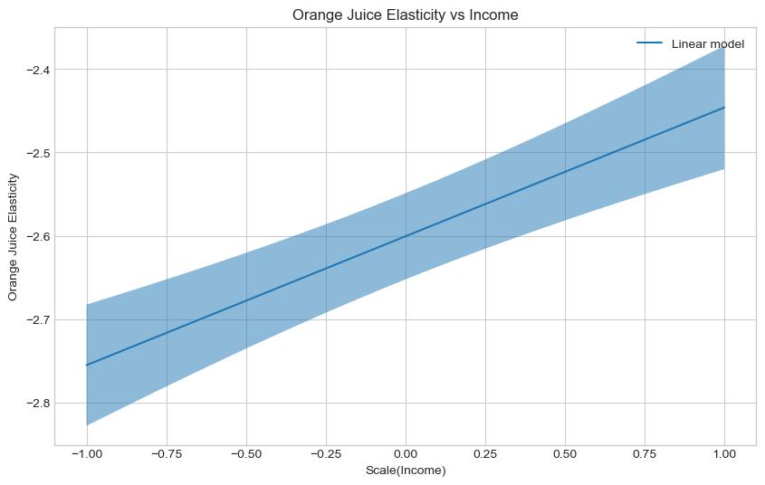
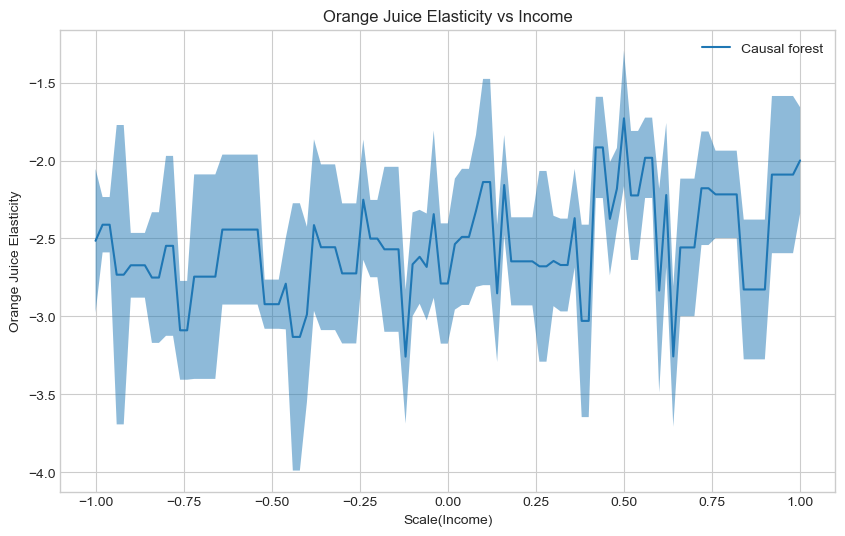
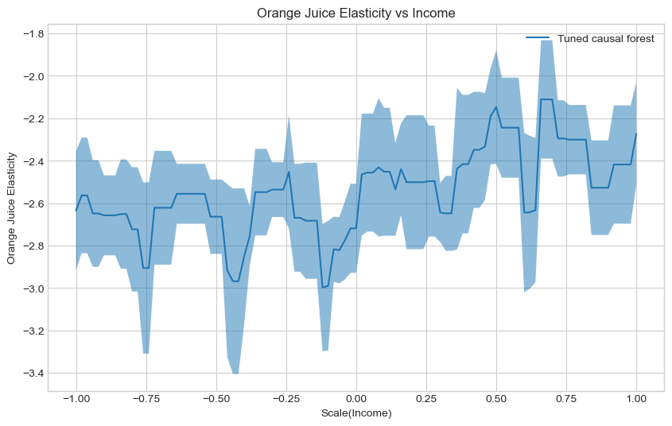
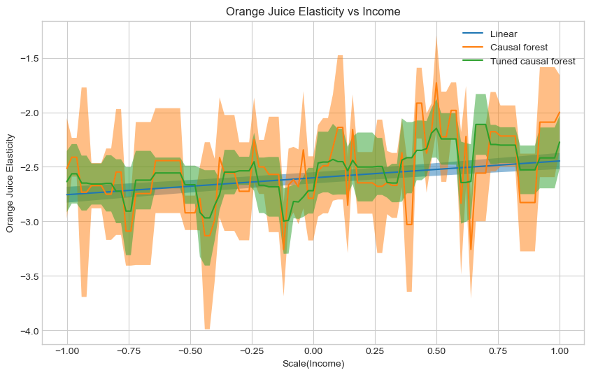
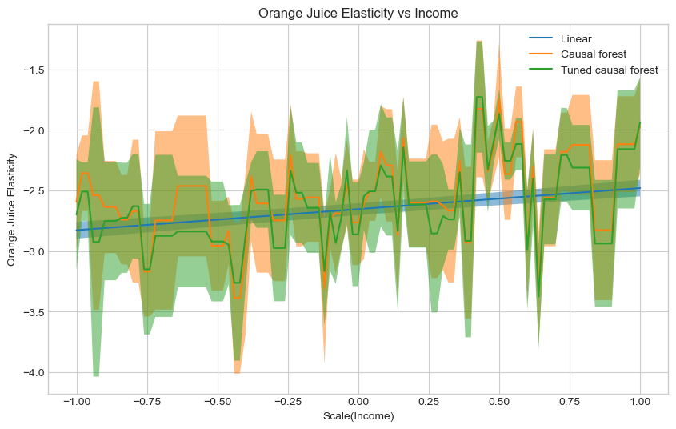

import matplotlib.pyplot as plt
import numpy as np
import pandas as pd
import os
import urllib.request
## Ignore warnings
import warnings
warnings.filterwarnings("ignore")
# Set seed and plot style
np.random.seed(73)
plt.style.use('seaborn-whitegrid')
%matplotlib inlineExercise set 9: Double machine learning
In this exercise set we will once again be working with estimation of conditional average treatment effects assuming selection on observables. However, this time the focus will be more broadly on double machine learning in econml, learning how to utilize these methods to get estimates, both assuming a partially linear model (LinearDML) and non-parametrically using causal forests (CausalForestDML).
As an example we will examine the age-old question of orange juice price-elasticity, which, as we all know, have haunted economists for millenia. To answer this question we will use a subset of Dominick’s dataset from the James M. Kilts Center, University of Chicago Booth School of Business. The data is a repeated cross sectional from stores (which we pool), where our main variables of interest are the amount of units sold (outcome) and the price of orange juice (treatment) and median income in the neighborhood (treatment effect heterogeneity). A description of the dataset can be seen here. Throughout, we assume selection on observables. This exercise was in part inspired by the econml notebooks on causal model selection and double machine learning.
Getting started
In this first part of the exercise we will be digging straight into estimating treatment effects using double machine learning. As such, we will be postponing training of models for predicting Y and T for just a moment, although this is an essential part of double machine learning and should not be neglected.
Exercise 1.1
Load the data using the following code and verify that you have correctly loaded the
DataFrameby printing the first 5 rows.NOTE: The following code will download the file which might take a few seconds dependent on your internet.
Hints:
DataFrame’s have a method called .head()
# Import the data
file_name = "oj_large.csv"
if not os.path.isfile(file_name):
print("Download file")
urllib.request.urlretrieve("https://msalicedatapublic.blob.core.windows.net/datasets/OrangeJuice/oj_large.csv", file_name)
oj_data = pd.read_csv(file_name)### BEGIN SOLUTION
oj_data.head()
### END SOLUTION| store | brand | week | logmove | feat | price | AGE60 | EDUC | ETHNIC | INCOME | HHLARGE | WORKWOM | HVAL150 | SSTRDIST | SSTRVOL | CPDIST5 | CPWVOL5 | |
|---|---|---|---|---|---|---|---|---|---|---|---|---|---|---|---|---|---|
| 0 | 2 | tropicana | 40 | 9.018695 | 0 | 3.87 | 0.232865 | 0.248935 | 0.11428 | 10.553205 | 0.103953 | 0.303585 | 0.463887 | 2.110122 | 1.142857 | 1.92728 | 0.376927 |
| 1 | 2 | tropicana | 46 | 8.723231 | 0 | 3.87 | 0.232865 | 0.248935 | 0.11428 | 10.553205 | 0.103953 | 0.303585 | 0.463887 | 2.110122 | 1.142857 | 1.92728 | 0.376927 |
| 2 | 2 | tropicana | 47 | 8.253228 | 0 | 3.87 | 0.232865 | 0.248935 | 0.11428 | 10.553205 | 0.103953 | 0.303585 | 0.463887 | 2.110122 | 1.142857 | 1.92728 | 0.376927 |
| 3 | 2 | tropicana | 48 | 8.987197 | 0 | 3.87 | 0.232865 | 0.248935 | 0.11428 | 10.553205 | 0.103953 | 0.303585 | 0.463887 | 2.110122 | 1.142857 | 1.92728 | 0.376927 |
| 4 | 2 | tropicana | 50 | 9.093357 | 0 | 3.87 | 0.232865 | 0.248935 | 0.11428 | 10.553205 | 0.103953 | 0.303585 | 0.463887 | 2.110122 | 1.142857 | 1.92728 | 0.376927 |
Exercise 1.2
The following code subsets the data into different parts corresponding to
X,Y,WandT, but have been named temporary names. Which is which, and why?Hints:
What’s just confounders and what drives heterogeneity?
# Prepare data
from sklearn.preprocessing import StandardScaler
from sklearn.model_selection import train_test_split
scaler = StandardScaler()
non_categorical_cols = ['feat', 'AGE60', 'EDUC', 'ETHNIC', 'HHLARGE', 'WORKWOM', 'HVAL150', 'SSTRDIST', 'SSTRVOL', 'CPDIST5', 'CPWVOL5']
categorical_cols = ['brand']
temp_1 = scaler.fit_transform(oj_data[non_categorical_cols].values)
temp_2 = scaler.fit_transform(pd.get_dummies(oj_data[categorical_cols]).values)
# Stacks categorical and non categorical variables together
temp_3 = np.hstack([temp_1, temp_2])
temp_4 = np.log(oj_data["price"]).values
temp_5 = oj_data['logmove'].values
temp_6 = scaler.fit_transform(oj_data[['INCOME']].values)
X = # FILL IN
W = # FILL IN
Y = # FILL IN
T = # FILL IN
XW = np.hstack([X, W])
Y_train, Y_val, T_train, T_val, X_train, X_val, W_train, W_val, XW_train, XW_val = train_test_split(Y, T, X, W, XW, test_size=.2)# Prepare data
from sklearn.preprocessing import StandardScaler
from sklearn.model_selection import train_test_split
scaler = StandardScaler()
non_categorical_cols = ['feat', 'AGE60', 'EDUC', 'ETHNIC', 'HHLARGE', 'WORKWOM', 'HVAL150', 'SSTRDIST', 'SSTRVOL', 'CPDIST5', 'CPWVOL5']
categorical_cols = ['brand']
temp_1 = scaler.fit_transform(oj_data[non_categorical_cols].values)
temp_2 = scaler.fit_transform(pd.get_dummies(oj_data[categorical_cols]).values)
temp_3 = np.hstack([temp_1, temp_2])
temp_4 = oj_data['logmove'].values
temp_5 = np.log(oj_data["price"]).values
temp_6 = scaler.fit_transform(oj_data[['INCOME']].values)
X = temp_6
W = temp_3
Y = temp_4
T = temp_5
XW = np.hstack([X, W])
Y_train, Y_val, T_train, T_val, X_train, X_val, W_train, W_val, XW_train, XW_val = train_test_split(Y, T, X, W, XW, test_size=.2)Exercise 1.3
Create an instance of a
LinearDMLand fit it to the training data using default input parameters.Hints:
There’s an example on this page
# Your code### BEGIN SOLUTION
from econml.dml import LinearDML
linear_est = LinearDML()
linear_est.fit(Y_train, T_train, X=X_train, W=W_train)
### END SOLUTION<econml.dml.dml.LinearDML at 0x2a1b2632f50>Exercise 1.4
Look at the documentation for
LinearDML, which can be found here.How are the models for
YandTcreated? Does this explain why the data was scaled?
# Your answer### BEGIN SOLUTION
# cross validated LASSO -- sensitive to scaling, hence standardscaling!
### END SOLUTIONExercise 1.5
Get an estimate of the treatment effect heterogeneity using the
summarymethod. Is the sign as expected?
# Your code### BEGIN SOLUTION
linear_est.summary()
# Positive slope -- less price sensitive as income increases. Makes sense!
### END SOLUTION| point_estimate | stderr | zstat | pvalue | ci_lower | ci_upper | |
|---|---|---|---|---|---|---|
| X0 | 0.155 | 0.027 | 5.821 | 0.0 | 0.102 | 0.207 |
| point_estimate | stderr | zstat | pvalue | ci_lower | ci_upper | |
|---|---|---|---|---|---|---|
| cate_intercept | -2.601 | 0.026 | -98.624 | 0.0 | -2.652 | -2.549 |
A linear parametric conditional average treatment effect (CATE) model was fitted:
$Y = \Theta(X)\cdot T + g(X, W) + \epsilon$
where for every outcome $i$ and treatment $j$ the CATE $\Theta_{ij}(X)$ has the form:
$\Theta_{ij}(X) = X' coef_{ij} + cate\_intercept_{ij}$
Coefficient Results table portrays the $coef_{ij}$ parameter vector for each outcome $i$ and treatment $j$. Intercept Results table portrays the $cate\_intercept_{ij}$ parameter.
Exercise 1.6
Estimate and plot the conditional average treatment effect and the the 95% confidence interval with the
LinearDMLmodel on the followingX_testdata, which generates counterfactual income levels ranging from -1 to 1.Hints:
There documentation for
LinearDMLcan be found on this page.Try looking for methods that start with
effect
## Generate test data
min_income = -1
max_income = 1
delta = (1 - (-1)) / 100
X_test = np.arange(min_income, max_income + delta - 0.001, delta).reshape(-1,1)
# Calculate treatment effect and interval
te_pred_linear = # FILL IN
te_pred_interval_linear = # FILL IN
# Plot Orange Juice elasticity as a function of income
plt.figure(figsize=(10,6))
plt.plot(X_test, te_pred_linear, label="Linear model")
plt.xlabel(r'Scale(Income)')
plt.ylabel('Orange Juice Elasticity')
plt.legend()
plt.title("Orange Juice Elasticity vs Income")
plt.show()SyntaxError: invalid syntax (1647766146.py, line 9)### BEGIN SOLUTION
# Generate test data
min_income = -1
max_income = 1
delta = (1 - (-1)) / 100
X_test = np.arange(min_income, max_income + delta - 0.001, delta).reshape(-1,1)
# Calculate treatment effects
te_pred_linear = linear_est.effect(X_test)
te_pred_interval_linear = linear_est.effect_interval(X_test, alpha = 0.05)
# Plot Orange Juice elasticity as a function of income
plt.figure(figsize=(10,6))
plt.plot(X_test, te_pred_linear, label="Linear model")
plt.fill_between(X_test.flatten(), te_pred_interval_linear[0], te_pred_interval_linear[1], alpha=.5)
plt.xlabel(r'Scale(Income)')
plt.ylabel('Orange Juice Elasticity')
plt.legend()
plt.title("Orange Juice Elasticity vs Income")
plt.show()
### END SOLUTION
Exercise 1.7
Create an instance of a
CausalForestDMLand fit it to the training data using default input parameters.Hints:
It follows exactly the same recipe as
LinearDML.
# Your code### BEGIN SOLUTION
from econml.dml import CausalForestDML
cf_est = CausalForestDML()
cf_est.fit(Y_train, T_train, X=X_train, W=W_train)
### END SOLUTION<econml.dml.causal_forest.CausalForestDML at 0x2a1b97de3e0>Exercise 1.8
Estimate and plot the conditional average treatment effect and the the 95% confidence interval with the
CausalForestDMLmodelX_test.Hints:
It follows exactly the same recipe as
LinearDML.
# Your code### BEGIN SOLUTION
te_pred_cf = cf_est.effect(X_test)
te_pred_interval_cf = cf_est.effect_interval(X_test, alpha=0.05)
# Plot Orange Juice elasticity as a function of income
plt.figure(figsize=(10,6))
plt.plot(X_test, te_pred_cf, label="Causal forest")
plt.fill_between(X_test.flatten(), te_pred_interval_cf[0], te_pred_interval_cf[1], alpha=.5)
plt.xlabel(r'Scale(Income)')
plt.ylabel('Orange Juice Elasticity')
plt.legend()
plt.title("Orange Juice Elasticity vs Income")
plt.show()
### END SOLUTION
As discussed during the lecture, we can use the R-loss to evaluate the fit of the conditional average treatment effect and use this to perform causal model selection.
This could be done manually, but much like grf in R, econml also offers automatic tuning with the tune method, which we will utilize to tune the causal forest in CausalForestDML.
Exercise 1.9
Create an instance of a
CausalForestDML, tune it on the training data and then fit it to the training data, all using default input parameters.Hints:
The call to
tunethe model looks exactly like the call tofitthe model.
# Your code### BEGIN SOLUTION
from econml.dml import CausalForestDML
cf_tuned_est = CausalForestDML()
cf_tuned_est.tune(Y_train, T_train, X=X_train, W=W_train)
cf_tuned_est.fit(Y_train, T_train, X=X_train, W=W_train)
### END SOLUTION<econml.dml.causal_forest.CausalForestDML at 0x2a1b9beb280>Exercise 1.8
Estimate and plot the conditional average treatment effect and the the 95% confidence interval with the tuned
CausalForestDMLmodel onX_test.Hints:
It follows exactly the same recipe as
LinearDMLand an untunedCausalForestDML.
# Your code### BEGIN SOLUTION
te_pred_tuned_cf = cf_tuned_est.effect(X_test)
te_pred_interval_tuned_cf = cf_tuned_est.effect_interval(X_test, alpha=0.05)
# Plot Orange Juice elasticity as a function of income
plt.figure(figsize=(10,6))
plt.plot(X_test, te_pred_tuned_cf, label="Tuned causal forest")
plt.fill_between(X_test.flatten(), te_pred_interval_tuned_cf[0], te_pred_interval_tuned_cf[1], alpha=.5)
plt.xlabel(r'Scale(Income)')
plt.ylabel('Orange Juice Elasticity')
plt.legend()
plt.title("Orange Juice Elasticity vs Income")
plt.show()
### END SOLUTION
Exercise 1.9
Plot the conditional average treatment effect and the the 95% confidence interval for all three models on
X_test. Which do your prefer?Hints:
You can call
plotandfill_betweenrepeatedly before callingxlabel
### BEGIN SOLUTION
# Plot Orange Juice elasticity as a function of income
plt.figure(figsize=(10,6))
# Linear
plt.plot(X_test, te_pred_linear, label="Linear")
plt.fill_between(X_test.flatten(), te_pred_interval_linear[0], te_pred_interval_linear[1], alpha=.5)
# Untuned CF
plt.plot(X_test, te_pred_cf, label="Causal forest")
plt.fill_between(X_test.flatten(), te_pred_interval_cf[0], te_pred_interval_cf[1], alpha=.5)
# Tuned CF
plt.plot(X_test, te_pred_tuned_cf, label="Tuned causal forest")
plt.fill_between(X_test.flatten(), te_pred_interval_tuned_cf[0], te_pred_interval_tuned_cf[1], alpha=.5)
# Make pretty
plt.xlabel(r'Scale(Income)')
plt.ylabel('Orange Juice Elasticity')
plt.legend()
plt.title("Orange Juice Elasticity vs Income")
plt.show()
# No clear way to tell which is the correct model.
# Given that the tuned causal forest is tuned using the R-loss,
# I would atleast prefer that over the untuned causal forest
### END SOLUTION
Exercise 1.10
econmlimplements a scoring function using the R-loss, called theRscorer. Fit theRscorerto the appropriate data sample.NOTE: The
Rscorerneeds a model to create residuals. Here we input aLassoCV, which is also the default in the double machine learning models. As such we obtain similar residuals.Hints:
Should we use training data or held out data for causal model selection?
# Import model
from sklearn.linear_model import LassoCV
from econml.score import RScorer
# Create scorer
scorer = RScorer(model_y=LassoCV(), model_t=LassoCV())
# FILL IN### BEGIN SOLUTION
# Import model
from sklearn.linear_model import LassoCV
from econml.score import RScorer
# Create scorer
scorer = RScorer(model_y=LassoCV(), model_t=LassoCV())
scorer.fit(Y_val, T_val, X=X_val, W=W_val)
### END SOLUTION<econml.score.rscorer.RScorer at 0x2a1b99706d0>Exercise 1.11
Score the models using the
Rscorer’sbest_modelmethod. Which model is the preferred one? Is it preferred over a constant average treatment effect?Hints:
If you’re in doubt as to which model the method has selected, you can return all the scores by setting
return_scores = Trueand compare the best score to the listThe
best_modelmethod accepts a list of fitted estimators, and the documentation can be seen here
# Your code### BEGIN SOLUTION
cate_models = [linear_est, cf_est, cf_tuned_est]
best_model, best_score, score_list = scorer.best_model(cate_models, return_scores = True)
print(best_model)
print(best_score)
print(score_list)
# The tuned causal forest is the best model,
# As it has an rscore of higher than 0, it is preferred over a constant average treatment effect.
# Although we note that this is very close to zero
### END SOLUTION<econml.dml.causal_forest.CausalForestDML object at 0x000002A1B9BEB280>
0.0011816363186031298
[0.0009297028164834131, -0.001814529865579395, 0.0011816363186031298]Predicting treatment and outcome
Having now looked closer at how to code up estimation of heterogeneous treatment effects using double machine learning estimators, we will start with the task that is predicting both Y and T, from which we can learn the optimal hyperparameters to pass on to our double machine learning estimators.
In practice, this is probably where you will be spending most of the time, optimizing features and models to accurately predict treatment and outcome, thus achieving better converge rates.
We have covered this in both session 3 and 4, where we covered model selection and supervised learning, respectively.
Exercise 2.1
What covariates should we use to predict
YandT? Is this part of the train test split we made in exercise 1.1?Hints:
Look at the struqtural equations in the lecture slides. What enters in the nuisance functions?
### BEGIN SOLUTION
# Both Y and T should be predicted using both X and W
# If T was used in predicting Y, we should use a doubly robust estimator, which is not possible for continuous outcomes
# We did perform a horizontal stacking of X and W, called XW, before making our train test split
# We can use XW to create the models
### END SOLUTIONTo make this go by slightly faster, I have pre-selected three models and their respective hyperparametergrids for which to search over. Furthermore, we utilize 2 fold cross validation (matching the default amount of folds in econml) and 10 random hyperparameter combinations using RandomizedSearchCV, which we covered in session 3.
Each model should be using negative_mean_squared_error, and you should make note of the best performing hyper mean squared error, such that you can compare performance across estimators.
Exercise 2.2
Create a
Lassoto predict the outcome,Y.Save the best hyperparameter combination.
Hints:
The best score and best hyperparameter can be found using the methods
best_score_andbest_param_respectively.
from sklearn.model_selection import RandomizedSearchCV
from sklearn.pipeline import Pipeline
from sklearn # FILL IN
pipe_lasso = Pipeline([
# FILL IN
]
)
param_grid = {'lasso__alpha':np.logspace(-5, 3, 10)}
rs = RandomizedSearchCV(
# FILL IN
)
# Fit
# FILL IN
# Score
# FILL INSyntaxError: invalid syntax (3612000372.py, line 5)### BEGIN SOLUTION
from sklearn.model_selection import RandomizedSearchCV
from sklearn.pipeline import Pipeline
from sklearn.linear_model import Lasso
pipe_lasso = Pipeline([
('lasso', Lasso(random_state=1))
]
)
param_grid = {'lasso__alpha':np.logspace(-5, 3, 10)}
rs = RandomizedSearchCV(estimator=pipe_lasso,
param_distributions=[param_grid],
scoring='neg_mean_squared_error',
cv=2,
n_iter = 10,
n_jobs=-1,
random_state=73)
# Fit
rs.fit(XW_train, Y_train)
# Score
print(rs.best_params_)
print(rs.best_score_)
y_lasso_best_params = rs.best_params_
### END SOLUTION{'lasso__alpha': 0.0005994842503189409}
-0.7015673056724774Exercise 2.3
Create a
RandomForestRegressorto predict the outcome,Y.Save the best hyperparameter combination.
Hints:
The best score and best hyperparameter can be found using the methods
best_score_andbest_param_respectively.
from sklearn # FILL IN
pipe_forest = Pipeline([
# FILL IN
]
)
param_grid= [{
'forest__n_estimators': np.unique(np.logspace(0, 3, 25).astype(int)),
'forest__max_features': np.arange(0.1, 1.01, 0.1),
'forest__min_samples_split': np.arange(0.01, 0.2, 0.01),
'forest__min_samples_leaf': np.arange(2, 50, 2),
'forest__max_depth': np.unique(np.logspace(1, 4, 20).astype(int))
}]
rs = RandomizedSearchCV(
# FILL IN
)
# Fit
# FILL IN
# Score
# FILL IN### BEGIN SOLUTION
from sklearn.ensemble import RandomForestRegressor
pipe_forest = Pipeline([
('forest', RandomForestRegressor())
]
)
param_grid= [{
'forest__n_estimators': np.unique(np.logspace(0, 3, 25).astype(int)),
'forest__max_features': np.arange(0.1, 1.01, 0.1),
'forest__min_samples_split': np.arange(0.01, 0.2, 0.01),
'forest__min_samples_leaf': np.arange(2, 50, 2),
'forest__max_depth': np.unique(np.logspace(1, 4, 20).astype(int))
}]
rs = RandomizedSearchCV(estimator=pipe_forest,
param_distributions=param_grid,
scoring='neg_mean_squared_error',
cv=2,
n_iter = 10,
n_jobs=-1,
random_state=73)
# Fit
rs.fit(XW_train, Y_train)
# Score
print(rs.best_params_)
print(rs.best_score_)
y_forest_best_params = rs.best_params_
### END SOLUTION{'forest__n_estimators': 1000, 'forest__min_samples_split': 0.04, 'forest__min_samples_leaf': 46, 'forest__max_features': 0.4, 'forest__max_depth': 61}
-0.6439130531996966Exercise 2.4
Create a
HistGradientBoostingRegressorto predict the outcome,Y.Save the best hyperparameter combination.
NOTE: The
HistGradientBoostingRegressoris an efficient model which does gradient boosting.Hints:
The best score and best hyperparameter can be found using the methods
best_score_andbest_param_respectively.
# Your code
from sklearn # FILL IN
pipe_booster = Pipeline([
# FILL IN
]
)
param_grid= [{
'booster__min_samples_leaf': np.arange(2, 50, 2),
'booster__max_depth': np.unique(np.logspace(1, 4, 20).astype(int)),
'booster__learning_rate':np.arange(0,1.001,0.1)
}]
rs = RandomizedSearchCV(
# FILL IN
)
# Fit
# FILL IN
# Score
# FILL IN### BEGIN SOLUTION
from sklearn.ensemble import HistGradientBoostingRegressor
pipe_booster = Pipeline([
('booster', HistGradientBoostingRegressor())
]
)
param_grid= [{
'booster__min_samples_leaf': np.arange(2, 50, 2),
'booster__max_depth': np.unique(np.logspace(1, 4, 20).astype(int)),
'booster__learning_rate':np.arange(0,1.001,0.1)
}]
rs = RandomizedSearchCV(estimator=pipe_booster,
param_distributions=param_grid,
scoring='neg_mean_squared_error',
cv=2,
n_iter = 10,
n_jobs=-1,
random_state=73)
# Fit
rs.fit(XW_train, Y_train)
# Score
print(rs.best_params_)
print(rs.best_score_)
y_booster_best_params = rs.best_params_
### END SOLUTION{'booster__min_samples_leaf': 46, 'booster__max_depth': 379, 'booster__learning_rate': 0.30000000000000004}
-0.6227261601961838Exercise 2.5
Which model best predicts
Y? Create a model of that type with the best hyperparameter combination
# Your code### BEGIN SOLUTION
# It's the HistGradientBoostingRegressor (gradient boosted models are very powerful)
# As is has the highest negative mean squared error
# Remove 'booster__' prefix
y_params = {k.split('__')[-1]:v for k,v in y_booster_best_params.items()}
# Create model
best_y = HistGradientBoostingRegressor(**y_params)
### END SOLUTIONExercise 2.6
You have now found the model which best predicts
Y, and now we repeat the same process forTTo find the best model to predict
T, repeat exercise 2.2 through 2.5 but predictingT
# Your code### BEGIN SOLUTION
pipe_lasso = Pipeline([
('lasso', Lasso(random_state=1))
]
)
lambdas = np.logspace(-5, 3, 10)
rs = RandomizedSearchCV(estimator=pipe_lasso,
param_distributions=[{'lasso__alpha':lambdas}],
scoring='neg_mean_squared_error',
cv=2,
n_iter = 10,
n_jobs=-1,
random_state=73)
rs.fit(XW_train, T_train)
print(rs.best_params_)
print(rs.best_score_)
t_lasso_best_params = rs.best_params_
pipe_forest = Pipeline([
('forest', RandomForestRegressor())
]
)
param_grid= [{
'forest__n_estimators': np.unique(np.logspace(0, 3, 25).astype(int)),
'forest__max_features': np.arange(0.1, 1.01, 0.1),
'forest__min_samples_split': np.arange(0.01, 0.2, 0.01),
'forest__min_samples_leaf': np.arange(2, 50, 2),
'forest__max_depth': np.unique(np.logspace(1, 4, 20).astype(int))
}]
rs = RandomizedSearchCV(estimator=pipe_forest,
param_distributions=param_grid,
scoring='neg_mean_squared_error',
cv=2,
n_iter = 10,
n_jobs=-1,
random_state=73)
rs.fit(XW_train, T_train)
print(rs.best_params_)
print(rs.best_score_)
t_forest_best_params = rs.best_params_
pipe_booster = Pipeline([
('booster', HistGradientBoostingRegressor())
]
)
param_grid= [{
'booster__min_samples_leaf': np.arange(2, 50, 2),
'booster__max_depth': np.unique(np.logspace(1, 4, 20).astype(int)),
'booster__learning_rate':np.arange(0,1.001,0.1)
}]
rs = RandomizedSearchCV(estimator=pipe_booster,
param_distributions=param_grid,
scoring='neg_mean_squared_error',
cv=2,
n_iter = 10,
n_jobs=-1,
random_state=73)
rs.fit(XW_train, T_train)
print(rs.best_params_)
print(rs.best_score_)
t_booster_best_params = rs.best_params_
# Remove 'booster__' prefix
t_params = {k.split('__')[-1]:v for k,v in t_forest_best_params.items()}
# Create best model
best_t = RandomForestRegressor(**t_params)
### END SOLUTION{'lasso__alpha': 7.742636826811278e-05}
-0.03612321520342247
{'forest__n_estimators': 421, 'forest__min_samples_split': 0.060000000000000005, 'forest__min_samples_leaf': 26, 'forest__max_features': 0.7000000000000001, 'forest__max_depth': 20}
-0.03577823168557294
{'booster__min_samples_leaf': 46, 'booster__max_depth': 379, 'booster__learning_rate': 0.30000000000000004}
-0.03669465435871566Exercise 2.7
Estimate a
LinearDMLas well as an untuned and tunedCausalForestDMLusing the new models forTandY.Plot the conditional average treatment effect and the the 95% confidence interval for all three models on
X_test. Which do your prefer?
# Your code### BEGIN SOLUTION
linear_est_best = LinearDML(model_t=best_t, model_y=best_y)
linear_est_best.fit(Y_train, T_train, X=X_train, W=W_train)
te_pred_linear_best = linear_est_best.effect(X_test)
te_pred_interval_linear_best = linear_est_best.effect_interval(X_test, alpha=0.05)
cf_est_best = CausalForestDML()
cf_est_best.fit(Y_train, T_train, X=X_train, W=W_train)
te_pred_cf_best = cf_est_best.effect(X_test)
te_pred_interval_cf_best = cf_est_best.effect_interval(X_test, alpha=0.05)
cf_tuned_est_best = CausalForestDML(model_t=best_t, model_y=best_y)
cf_tuned_est_best.tune(Y_train, T_train, X=X_train, W=W_train)
cf_tuned_est_best.fit(Y_train, T_train, X=X_train, W=W_train)
te_pred_tuned_cf_best = cf_tuned_est_best.effect(X_test)
te_pred_interval_tuned_cf_best = cf_tuned_est_best.effect_interval(X_test, alpha=0.05)
# Plot Orange Juice elasticity as a function of income
plt.figure(figsize=(10,6))
# Linear
plt.plot(X_test, te_pred_linear_best, label="Linear")
plt.fill_between(X_test.flatten(), te_pred_interval_linear_best[0], te_pred_interval_linear_best[1], alpha=.5)
# Untuned CF
plt.plot(X_test, te_pred_cf_best, label="Causal forest")
plt.fill_between(X_test.flatten(), te_pred_interval_cf_best[0], te_pred_interval_cf_best[1], alpha=.5)
# Tuned CF
plt.plot(X_test, te_pred_tuned_cf_best, label="Tuned causal forest")
plt.fill_between(X_test.flatten(), te_pred_interval_tuned_cf_best[0], te_pred_interval_tuned_cf_best[1], alpha=.5)
# Make pretty
plt.xlabel(r'Scale(Income)')
plt.ylabel('Orange Juice Elasticity')
plt.legend()
plt.title("Orange Juice Elasticity vs Income")
plt.show()
# No clear way to tell which is the correct model.
# Given that the tuned causal forest is tuned using the R-loss,
# I would atleast prefer that over the untuned causal forest
### END SOLUTION
Exercise 2.8
Score the three new models using the
Rscorer, now predicting the residuals using the models forTand `Y. Which model is the preferred one? Is it preferred over a constant average treatment effect?
# Your code### BEGIN SOLUTION
scorer = RScorer(model_y=best_y, model_t=best_t)
scorer.fit(Y_val, T_val, X=X_val, W=W_val)
cate_models_extended = [linear_est_best, cf_est_best, cf_tuned_est_best]
best_model_extended, best_score_extended, score_list_extended = scorer.best_model(cate_models_extended, return_scores = True)
print(best_model_extended)
print(best_score_extended)
print(score_list_extended)
# This time linear dml preferred, although again VERY close to 0
# - Would be interesting to run again with more folds at all steps and monte carlo iterations
# - Also more exhaustive model search for Y and Y
# Qualitatively, the conclusion is the same:
# More price sensitive when less income
### END SOLUTION<econml.dml.dml.LinearDML object at 0x000002A1BF6A74C0>
0.0008682275612443835
[0.0008682275612443835, -0.0029440261518598465, -0.0017967482149718883]Finishing thoughts
Today we have examined double machine learning and how to implement these models.
In practice, you should spend more time creating the models for T and Y, as they are quintessential in double machine learning. You should also increase the amount of folds in cross validation, as this increases the amount of data to train on when creating residuals. Furthermore, both the models and Rscorer support monte carlo iterations, mc_iters, which allows you to repeat the same process again with different splits, thus creating less noisy estimates of the residuals. We have not done this today as the running time of these models quite quickly becomes too long for an exercise set.
If you wish to examine linear treatment heterogeneity, you should also look into the input parameters featurizer and treatment_featurizer, which enables quick and easy interactions of covariates and treatments, possibly in combination with a SparseLinearDML. See e.g. this notebook
All of the econml functionality that we went through last week can also still be used with our models, e.g. explainability, CATE interpreters and policy learning.
Additionally, you should be aware that econml has a folder with notebook examples on their GitHub, where you can see the many different possibilities.